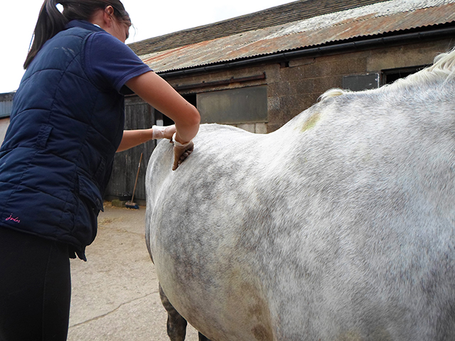
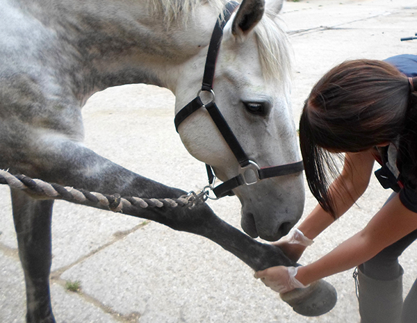

Equine Sports Massage Therapy (ESMT) is the physical manipulation of soft tissue to relieve tension and muscle spasm, thus reducing discomfort the horse may experience. ESMT uses a variety of clinical assessment techniques to find where these areas of tension are, followed by various massage techniques and stretching exercises.

The muscles in the horse’s body make up over 60% of their mass. It is therefore important that the muscles are kept in good condition, and areas of tension are released in order to allow maximum performance. Tension can build up due to many factors; the demands of their discipline, over use of an area, conformational faults or imbalances, dental issues, injury or trauma, poor fitting equipment, to list a few.
Tension or spasm in a small muscle can take a long time to become apparent, but in this time can be causing problems in other areas. For example a problem in a muscle in the hind quarters will cause tightening of other muscles around it. This can then cause a change in the horse’s movement, placing extra stress on other areas, such as the tendons of the lower limb. Therefore a massage not only relieves the muscle spasm that is present, but can also be used as a preventative method from further injury.
ESMT has many benefits including:
Any horse can benefit from the use of ESMT, from the top competition horse to the retired companion. Below are some indicators that your horse may benefit from treatment:
A general treatment takes approximately 90 minutes. This will include a full assessment and history, a full body massage, and an after care plan. Please note that the horse may require more than one treatment to receive the full benefit; each horse is an individual and some take longer than others to reach their optimum condition.
Veterinary approval/referral must be given before a treatment can be carried out according to the Veterinary Act. A referral form can be sent to you following an enquiry.
Depending upon the conditions that the horse shows, Deep Oscillation Therapy is also offered and can be used. Please see the Deep Oscillation section for more information.
£40 per session.
Please enquire for possible group discounts.